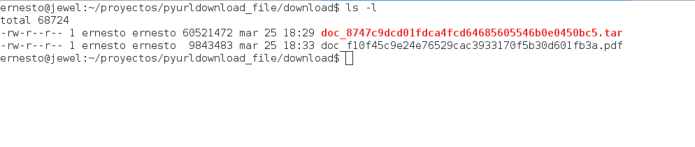

Descarga de documentos (Informes de gestión del 2015) de la página web de la Asamblea Nacional con Python.
Posted on vie 25 marzo 2016 in Tutorial Python • 2 min read
Retomando los artículos sobre webscraping (pueden visitarlos en el siguiente enlace).
Se tiene la página de la Asamblea Nacional, donde se alojan las memorias y cuentas del Ejecutivo Nacional, pueden visitar el sitio en el siguiente enlace.
El url es: http://www.asambleanacional.gob.ve//documento/show2/id/64 .
A continuación se muestra una imagen de la página ya citada:
Algunos de los enlaces son archivos en pdf y otros archivos .tar.
La idea es usar request y BeautifulSoup para primero abrir la página, luego extraer la información, llegar a los enlaces y bajar los archivos.
El repositorio de github del script se encuentra en el siguiente enlace.
El código se muestra a continuación:
#!/usr/bin/python3
import requests
from bs4 import *
import sys
import wget
#Entrada del url y del patrón a buscar
url = input('Enter URL -> ')
pattern = input('Enter search pattern-> ')
#Se lee la página web
html = requests.get(url)
#Se define el directorio donde se descargará los archivos
dir_download = "./download/"
#Si en la página se tiene bad request se sale de la aplicación
if html.text.find("400 Bad Request") != -1:
print ("Bad Request")
sys.exit()
#Se instancia BeautifulSoup con el texto de la página web
soup = BeautifulSoup(html.text)
#Se genera una lista de los tags 'a' que tiene la página
tags = soup('a')
#Se recorre los tags buscando si existe el tag href
#Si no existe se busca en el siguiente tag 'a'
#se crea el url a descargar.
#Y se intenta descargar el archivo
for tag in tags:
url_path = tag.get('href',None)
text = str(url_path)
if text.find(pattern) == -1: continue
domain = url.split("http://")[1].split("/")[0]
urldownload = "http://" + domain + text
print ("Retrieve: {0},{1}".format(tag.contents[0],urldownload))
file = text.split("/")[-1]
path_and_file = dir_download + file
try:
r = requests.get(urldownload)
with open(path_and_file, "wb") as f:
f.write(r.content)
except ConnectionError:
print("Can't download file: {0}".format(file))
except HTTPError:
print("Can't download file: {0}".format(file))
f.close()
Para ejecutar el programa se tiene:
./pyurldownload_file.py
Enter URL -> http://www.asambleanacional.gob.ve/documento/show2/id/64
Enter search pattern-> documentos
Al final de la ejecución del script se tendrán todos los archivos .tar y .pdf de la memoria y cuenta del Poder Ejecutivo del año 2015.
En la siguiente figura se muestra el directorio download con los primeros archivos descargados:

Y en la siguiente figura se muestra uno de los archivos abierto con evince:
Es necesario resaltar que el formato pdf es un crimen usarlo a la hora de análisis de datos ya que es posible por medio de humanos, los programas les cuenta leer contenido de un pdf, aunque se puede, se pierde información.
Es necesario que estos reportes de las instituciones y ministerios sean colocados como API Rest Ful enfocado a datos (json o xml) directamente de los portales de dichas instituciones.
Esto facilitaría el análisis de la información de dichos reportes.
En un futuro el script manejará hilos a fin de acelerar el proceso de descarga de los archivos.
Otro ejemplo de webscraping lo pueden encontrar en este enlace.
¡Haz tu donativo! Si te gustó el artículo puedes realizar un donativo con Bitcoin (BTC) usando la billetera digital de tu preferencia a la siguiente dirección: 17MtNybhdkA9GV3UNS6BTwPcuhjXoPrSzV
O Escaneando el código QR desde la billetera: